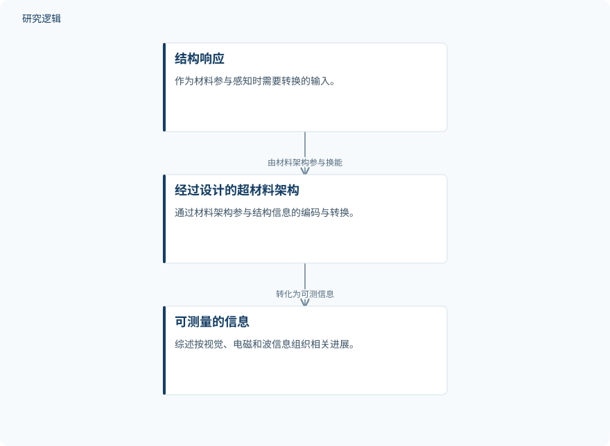

摘要解读
超材料作为结构健康监测换能器：批判性综述与展望
Metamaterials as transducers for structural health monitoring: a critical review and perspective
解读更新 2026-10-21 12:41 · 依据公开摘要整理，未核验全文细节
结构健康监测能否不再只依靠外加传感器，而让材料本身参与感知？这篇综述以超材料为换能载体，梳理结构响应如何转化为可测信息，为理解“材料中心”的监测思路提供分类框架。
文章目录
从外加传感器转向材料参与感知
传统结构健康监测依靠分布式传感器、数据采集系统、信号传输和外部数据处理评估工程结构状态。这一路径能够实现可靠的损伤检测，但仍受到系统复杂度、布线、功耗、维护与可扩展性等因素制约。
超材料提供的替代思路，是通过经过设计的材料架构，将结构响应转换为可测量的信息。关注点由此从“怎样给结构安装传感器”，转向“怎样让材料架构参与感知和信息传递”。
以输出信息的物理域组织研究进展
这是一篇综述，而非摘要中报告的新器件实验。作者围绕超材料如何编码、转换和传递结构信息展开讨论，并按照所生成信息的物理域，将相关进展组织为视觉信息、电磁信息和波信息。
摘要还将逆向设计、拓扑优化、增材制造、机器学习与数字孪生列为支撑技术，讨论其在开发兼具感知、滤波、放大和信息传递能力的多功能超材料中的作用，但未展开具体实现流程。
依据摘要整理的超材料换能关系示意


仅概括结构响应经设计架构转化为可测信息的关系，不代表论文原图，也不表达具体实验配置或性能。
下载 SVG图示关系说明
实线表示相邻阶段的信息流，虚线表示跨阶段联系或反馈。
结构响应 → 经过设计的超材料架构：由材料架构参与换能；经过设计的超材料架构 → 可测量的信息：转化为可测信息
视觉、电磁与波：不同的信息表达通道
综述归纳的视觉信息包括形状变换、结构色、力致变色和力致发光；电磁信息包括电学、电容、压电、摩擦电、射频、超表面及无源无线响应。这些类别展示了材料架构将结构响应转化为可读取信息的不同方式。
波信息则涵盖弹性波传播、带隙、共振偏移、模态转换、局域化和机械滤波。综述进一步提出材料中心监测的前景：材料不再仅是被动承载部件，而可能在信息到达常规电子系统之前，参与物理层面的处理与传递。这是摘要提出的发展方向，不能等同于已经验证的完整智能系统。
分类框架不等于性能与工程验证
仅凭摘要，无法判断综述纳入文献的数量、检索与筛选规则，也无法核对各类案例的样本规模、比较基线和验证范围。不同信息通道的灵敏度、稳定性及实际部署表现，同样不能据此排序；这些信息未在摘要中报告，并不意味着论文没有讨论。
阅读启发：先辨认材料承担了什么任务
阅读启发：进一步阅读时，可优先区分材料究竟承担了感知、滤波、放大还是通信任务，以及这些功能如何衔接电子读出系统。对于机器学习、逆向设计和数字孪生，更值得追问的是它们分别服务于架构设计还是信息解释，而不是仅因技术名称出现，就推断监测精度或可靠性已经提升。
以上为本站阅读启发与建议，不是论文已验证的结论。